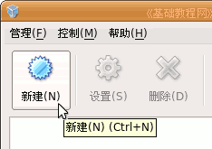
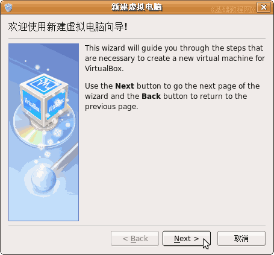
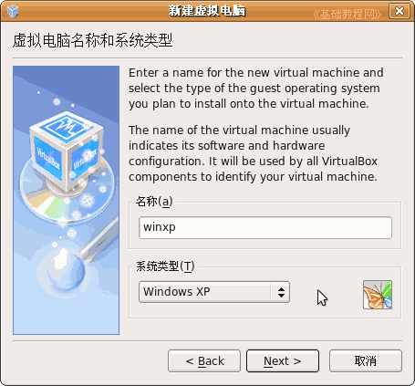
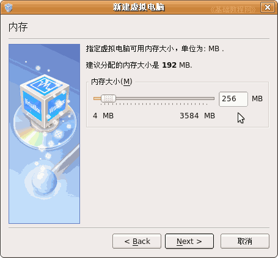
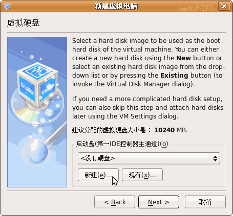
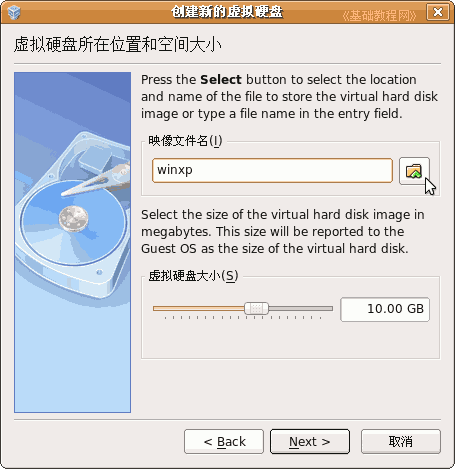
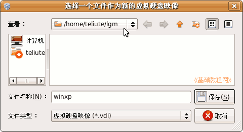
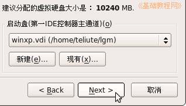
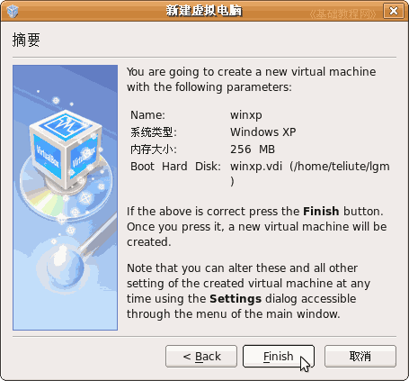
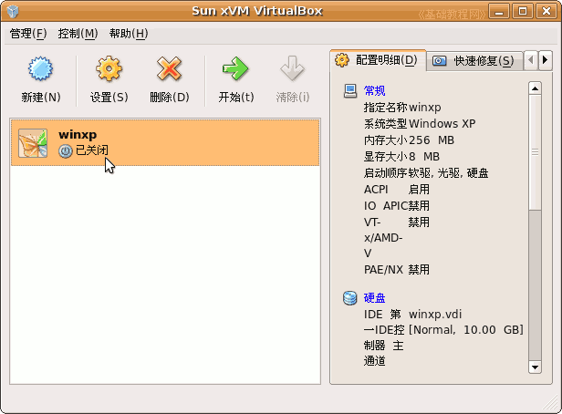

VirtualBox 虚拟机基础入门教程
作者：TeliuTe 来源：基础教程网
二、创建虚拟机 返回目录 下一课安装好主程序以后，就可以开始创建虚拟机系统了，下面我们来看一个练习；
1、运行主程序
1）Ubuntu点菜单“应用程序－系统工具－Sun xVM VirtualBox”
Windows里点菜单“开始－所有程序－Sun xVM VirtualBox－VirtualBox”
2）在出来的窗口里，找到工具栏左边“新建”按钮，点击进入；

3）在出来的新建向导里点“Next”按钮，继续下一步；

4）接下来中间的“名称”栏里输入winxp，下面的“系统类型”里选择Windows XP，然后点“Next”继续；

5）接下来是设置内存大小，在256M左右即可，主机内存多还可以多分配一些，然后点“Next”继续下一步；

6）接下来的硬盘设置，点左下角的“新建”按钮，创建一个新的虚拟硬盘；

a.接下来的硬盘向导和硬盘类型都点“Next”继续，动态类型是根据具体使用情况来分配容量；
b.在接下来的位置和容量，点映像文件名右边的小图标；

c.选择自己的文件夹，文件名输入“winxp”然后点“保存”按钮，虚拟硬盘的文件扩展名是.vdi

d.回到面板后点“Next－Finish”，完成虚拟硬盘的创建，回到向导点“Next”接着继续；

7）接下来出来一个“摘要”面板，看一下各个设置，点“Finish”完成新建向导；

8）回到主程序窗口，在中间的工作区里，就有了一个刚才新建的，用于安装winxp的虚拟电脑，
右边栏里是它的各项配置情况；

本节学习了在VirtualBox中创建虚拟机的基本操作，如果你成功地完成了练习，请继续学习下一课内容；本教程由86团学校TeliuTe制作|著作权所有
基础教程网：http://teliute.org
美丽的校园……
转载和引用本站内容，请保留作者和本站链接。